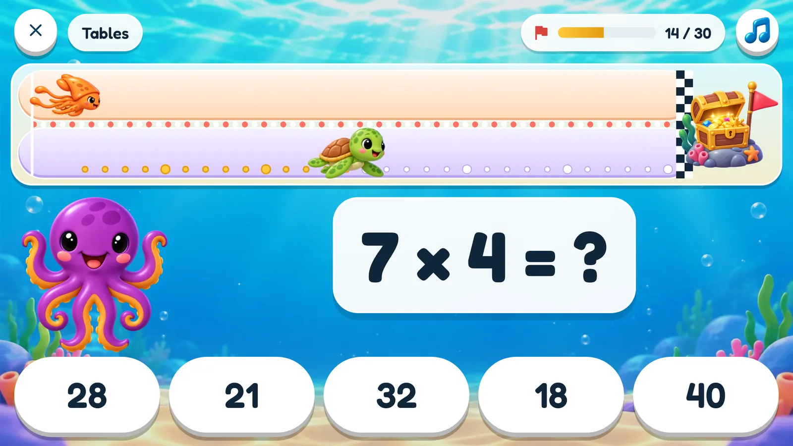
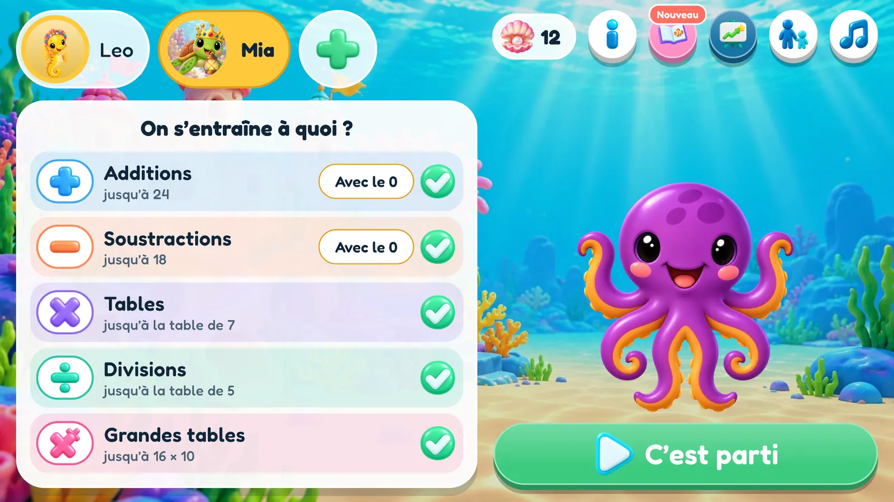
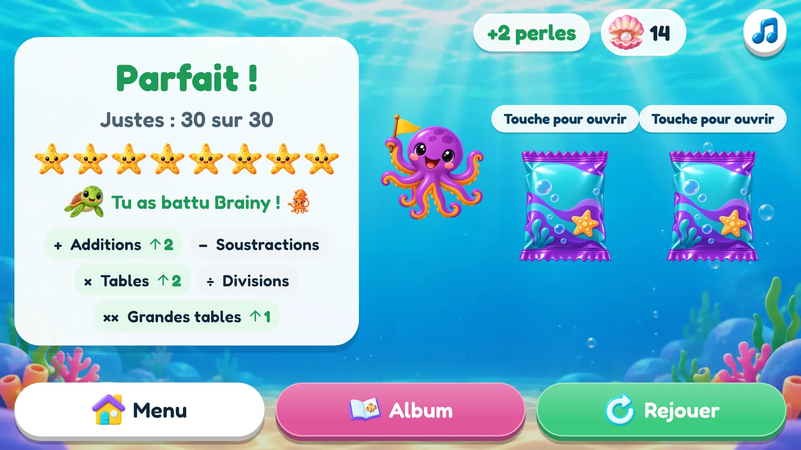
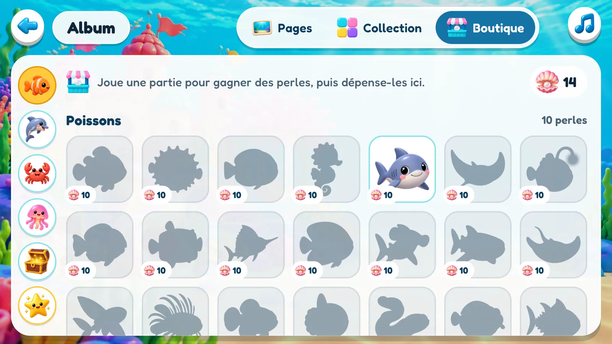
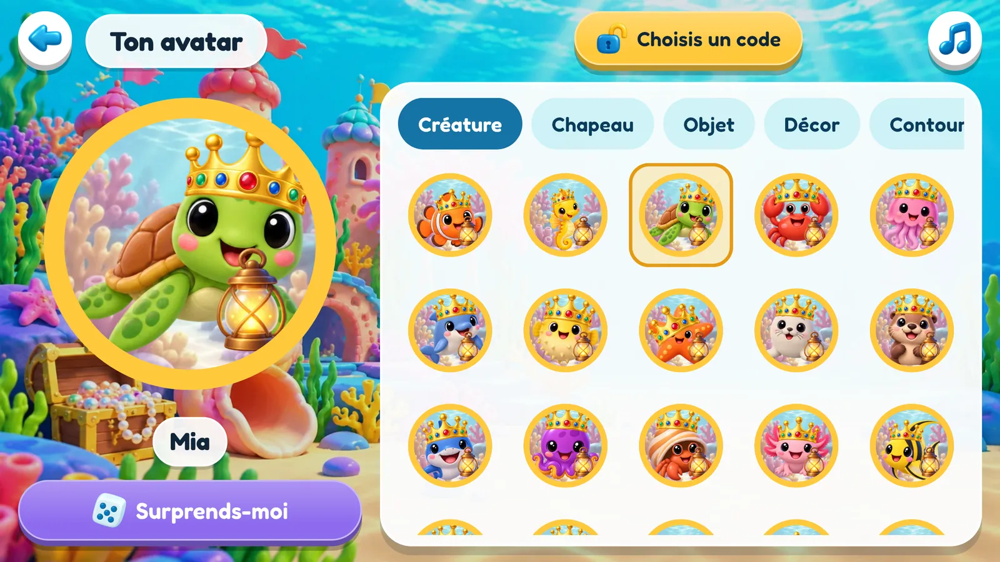
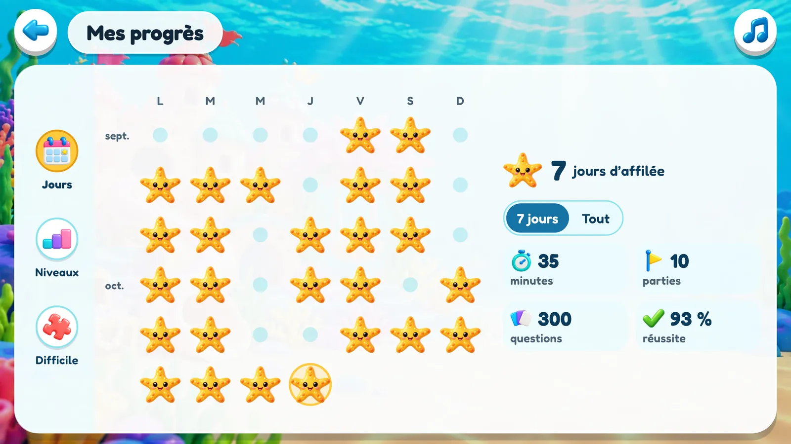
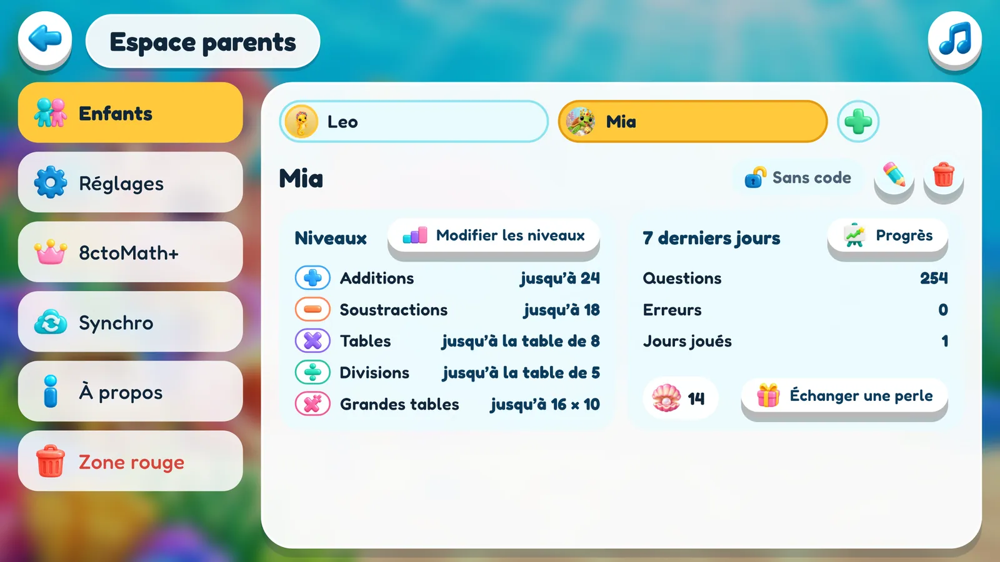

Le calcul mental qui s’adapte à votre enfant
8ctoMath entraîne les enfants au calcul, au fond de la mer. Chaque partie est une course de trente questions contre le calmar Brainy. Le niveau s’ajuste tout seul à votre enfant, les calculs qui lui posent problème reviennent plus souvent, et une bonne course rapporte des autocollants.


Comment se déroule une partie
Trente questions, une piste au fond de la mer, un coffre au trésor à l’arrivée. Chaque bonne réponse fait avancer d’une brasse, et le calmar Brainy nage sur la même piste.
Une question s’affiche
Parmi les types de calcul choisis, au niveau où en est cet enfant.
Choisir la réponse
Cinq réponses au choix. Les mauvaises sont des erreurs que les enfants font vraiment : la bonne, il faut la calculer, pas la deviner.
En avant !
Bonne réponse : la créature de votre enfant avance d’une brasse. Mauvaise réponse : la solution s’affiche avant la question suivante.
Brainy fait la course
Il met un peu plus de temps que cet enfant n’en met d’habitude. Le battre, c’est faire mieux que d’ordinaire.

Votre enfant
Nage dans la peau de la créature qu’il a choisie. Une brasse par bonne réponse.

Brainy
Nage à un rythme régulier, réglé sur les dernières parties de cet enfant.

8cto est l’entraîneur
Il attend à côté de la question, se réjouit d’une bonne réponse, fait la grimace devant une mauvaise et relance un enfant resté silencieux. À voix haute, en français, anglais, allemand ou espagnol.
Cinq types de calcul
Avant chaque partie, on choisit librement : un seul type de calcul, plusieurs ou les cinq. Chacun a son propre niveau, si bien qu’un enfant peut être très avancé en additions et tout juste débuter en divisions.
Additions
jusqu’à 10, 20, 100 et au-delà
Soustractions
jamais en dessous de zéro
Tables
jusqu’à la table de 12
Divisions
toujours sans reste
Grandes tables
comme 14 × 7

Le bon niveau, tout seul
Personne n’a besoin de deviner quel niveau convient, ni de le régler. Le jeu observe le déroulement de chaque partie et s’ajuste discrètement, pendant que l’enfant, lui, se contente de jouer.
Toujours le bon niveau
Chaque type de calcul a son propre niveau. Il monte quand votre enfant réussit et redescend quand les calculs deviennent trop difficiles.
Les calculs difficiles reviennent
Le jeu retient les calculs qui posent problème et les propose plus souvent, et moins souvent ceux que votre enfant connaît bien.
Deviner ne suffit pas
Les mauvaises réponses proposées sont des erreurs que les enfants font vraiment : la bonne, il faut la calculer.
Une course équitable
Brainy met un peu plus de temps que votre enfant n’en met habituellement pour une partie : pour le battre, il faut donc être un peu plus rapide que d’ordinaire. Rapide ou appliqué, chaque enfant a une course qu’il peut gagner.
Et dès le départ, au bon niveau
Un nouvel enfant indique un surnom et son âge, et 8cto choisit les calculs de la première partie et la taille des nombres. En une partie ou deux, les niveaux se sont ajustés à l’enfant. L’âge sert une seule fois et n’est jamais enregistré.

De quoi donner envie de nager
Trois récompenses, chacune pour une raison différente, et une boutique où dépenser l’une d’elles. Aucune ne s’achète avec de l’argent.

Huit étoiles de mer
Une s’allume à chaque palier franchi, de la moitié de bonnes réponses jusqu’à trente sur trente.

Perles
Une pour une partie sans erreur, une pour une victoire sur Brainy. À dépenser à la boutique, ou à échanger auprès d’un parent contre une récompense convenue à la maison.

Autocollants
Sans erreur : deux autocollants. Une erreur : encore un. Environ un autocollant sur vingt est rare.

La boutique
Avec ses perles, votre enfant achète exactement l’autocollant qui lui fait envie, et même un rare, pour bien plus cher. Chaque autocollant reste une silhouette tant qu’il n’est pas à lui : il y a toujours une raison de mettre des perles de côté.
Deux cents autocollants, huit pages
Les autocollants forment la collection. On en fait glisser un sur une page, on le tourne, on le retourne, on l’agrandit, on passe la page en plein écran. La page appartient à l’enfant et reste telle qu’il l’a laissée.


Cinq familles
Poissons · Nageoires & plumes · Pinces, coquilles & étoiles · Mous & lumineux · Trésors & trucs. Trente-six dans chacune, et la collection compte aussi les doubles.
Vingt rares
Une tortue d’or, un bébé kraken, une baleine arc-en-ciel, une sirène. Avec 8ctoMath+, environ un autocollant gagné sur vingt vient de cette série.
Frères et sœurs
Les enfants d’un même appareil peuvent s’envoyer des autocollants. Un double, ou celui que l’autre cherche depuis longtemps.


Chacun sa créature
Chaque enfant compose son avatar : une créature marine, un chapeau, un objet à tenir, un décor et une couleur de contour. Il s’affiche sur son bouton dans le menu, et c’est lui qui nage pendant la course.


Vingt créatures
Un poisson-clown, un hippocampe, une loutre de mer, un requin, un morse, un axolotl. Et même 8cto. Neuf chapeaux, neuf objets, neuf décors, et un bouton « Surprends-moi » pour les indécis.
Autocollants rares, portraits rares
Qui possède l’autocollant Tortue d’or peut devenir la tortue d’or. Vingt portraits, un par autocollant rare, et seul l’autocollant correspondant débloque chacun d’eux.
Dans la course, en personne
La créature choisie par l’enfant affronte Brainy dans l’eau, brasse après brasse, pendant que 8cto entraîne depuis le bord.

8cto et Brainy parlent
Les personnages bougent, et ils parlent. 8cto se réjouit d’une bonne réponse, fait la grimace devant une mauvaise et relance un enfant resté silencieux. À l’arrivée, Brainy fanfaronne ou boude. De vraies voix, en français, anglais, allemand ou espagnol.
Voix
Des dizaines de répliques : votre enfant mettra du temps à les avoir toutes entendues.
Musique et effets sonores
Une mélodie originale composée pour le jeu, et un bouton musique sur chaque écran. Les effets sonores se coupent séparément.
Animations réduites
Moins d’animations, pour les enfants que le mouvement distrait. Les personnages restent ; les fioritures disparaissent.
Pensé pour les tablettes
Format paysage, gros boutons, et pour le surnom un clavier de lettres intégré au jeu plutôt que le clavier du système. Très bien sur téléphone aussi.
Pour les parents
L’Espace parents se trouve derrière une petite barrière : un nombre écrit en toutes lettres, à saisir en chiffres. Facile pour vous, rébarbatif pour un enfant de six ans.
Jusqu’à six enfants
Un appareil, une famille. Chaque enfant a ses propres niveaux, perles et autocollants, et son propre avatar.
Un code secret pour chaque enfant
Quatre chiffres choisis par l’enfant, pour que personne d’autre ne joue à sa place. Oublié ? Vous l’enlevez.
Les progrès de chaque enfant
Les jours d’entraînement et la série en cours, les minutes, l’évolution de chaque niveau et les calculs encore difficiles. Les enfants peuvent les consulter aussi.
Un rappel quotidien
Si vous le souhaitez, 8cto envoie un rappel aux enfants qui ne se sont pas encore entraînés, une fois par jour, à l’heure de votre choix.
Modifier les niveaux
Ils s’ajustent tout seuls, mais si l’un d’eux est nettement trop facile ou trop difficile, vous pouvez le régler vous-même.
Échanger une perle
Retirez une perle du tas au moment de remettre, à la maison, la récompense convenue.
Synchro
Connectez-vous, et vous retrouvez la même famille sur tous vos appareils, avec une sauvegarde conservée en Suisse. Fait partie de 8ctoMath+.
Quatre langues
Français, English, Deutsch ou Español : la langue de l’appareil, ou celle de votre choix. Toute l’app, voix comprises, parle les quatre.


Rien ne quitte l’appareil
8ctoMath est fait pour les enfants, alors il ne collecte rien. Le jeu est complet, même en mode avion.
- ✓Aucune publicité, et rien qu’un enfant puisse acheter. L’unique achat se trouve derrière la barrière des adultes.
- ✓Aucun outil d’analyse, aucun pistage, aucun identifiant publicitaire, aucun rapport de plantage.
- ✓Aucun accès à la caméra, au micro, à la localisation, aux contacts, aux photos ni aux fichiers.
- ✓Un surnom, pas un nom. Ni date de naissance, ni e-mail, ni photo. L’âge indiqué sert une seule fois et n’est jamais enregistré.
- ✓Fonctionne hors ligne, sans compte. La synchronisation est facultative, et sa sauvegarde est conservée en Suisse.
- ✓Supprimer un enfant, ou toutes les données, se fait en quelques gestes, et c’est effacé partout.
Tous les détails figurent dans la politique de confidentialité, et la marche à suivre pour faire effacer des données, dans la politique de suppression des données.
Le calcul est gratuit. Le reste tient en un seul achat.
La version gratuite propose tous les calculs : les cinq types de calcul, la course et les niveaux qui suivent votre enfant y sont les mêmes que dans 8ctoMath+, qui débloque en plus le reste de la collection. Un seul achat, sans abonnement, pour tous les enfants de l’appareil.
8ctoMath
Tout le jeu, pour six enfants au maximum.
- Les cinq types de calcul, la course et les niveaux qui s’adaptent
- Les étoiles de mer, les perles, la boutique et les cadeaux entre enfants
- Les cinq premiers autocollants de chaque famille
- Deux pages de l’album : le Récif de corail et l’Épave
- Cinq créatures, et quelques chapeaux, objets et décors
- Les progrès de chaque enfant sur les sept derniers jours
- Les codes secrets, le rappel quotidien, l’Espace parents, les quatre langues
8ctoMath+
Tout ce que propose la version gratuite, et le reste de la mer.
- Les deux cents autocollants, y compris les vingt rares
- Les huit pages de l’album
- Toutes les créatures, tous les chapeaux, objets et décors
- Tous les progrès de chaque enfant, pas seulement les sept derniers jours
- Synchro : une sauvegarde de toute la famille, à jour sur tous les appareils connectés au même compte
- Pour tous les enfants de l’appareil, et acquis pour de bon
Acheté sur Google Play, derrière la barrière des adultes. Ce qu’un enfant a gagné ne lui est jamais retiré : l’avatar qu’il a composé et la page qu’il a remplie restent à lui.

Venez faire la course contre Brainy.
8ctoMath se télécharge gratuitement sur Google Play, pour les tablettes et téléphones Android. Des questions, des idées, un calcul qui semble faux ? Écrivez-nous.